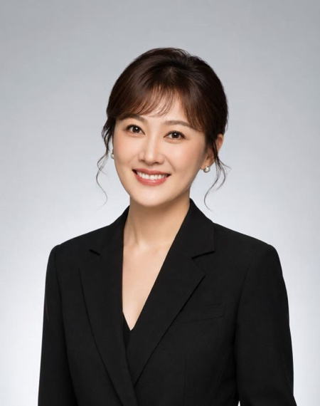

Beyond School, Beyond Big Names.
Thousands of applicants show the same grades and the same big-brand internships — where the logo shines and the intern disappears. Inside an international tech startup, the work is unmistakably yours: niche, real, at the frontier — and it's you who shines.
2-WeekBootcamp
4–5 small-group online sessions over two weeks on what's really happening in AI, robotics, and IoT — how startups build, fund, and scale. Taught by venture builders, not textbooks.
2–3 InternshipPlacements
2–3 internships with international tech startups over your fellowship year — real projects, real deliverables, side by side with founders. Experience no classroom or competition can give.
Review and EnhanceYour Profile
Graduate with what admissions officers rarely see: verifiable work at the tech frontier, referral letters from founders, and a story that is entirely your own.
Your Mentors
The bootcamp is taught and mentored by Transfong's leaders and innovation partners — practitioners who have built, invested in, and scaled technology businesses across Singapore, China, and beyond.

Dr. Li Wei
Programme Director of NTU's iSGP corporate training programme; former member of the technology commercialization team at A*STAR. B.Eng & Ph.D. in Microelectronics (NTU); MBA (INSEAD).

Tyler Huang
Former senior technology executive at NXP Semiconductors. Master's in Technology Management (NUS); dual bachelor's in Electronic Engineering and English (UESTC).

Zhang Rui
Co-founder of Yunhaiyao (云海肴); Vice President of the Tsinghua SEM Alumni Association; advisor to SUTD's S.M.A.R.T entrepreneurship programme. Master's (Tsinghua SEM); visiting scholar in innovation at Yale School of Management.
Dr. Shirley Yao
Industry mentor at NTU; former head of key accounts, Google APAC international growth team; mentor at Google's startup accelerator. Bachelor's, master's & Ph.D. from Peking University.